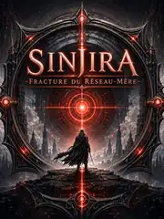

01

Édition Déduction simplifiée
SINJIRA™ · Déduction · Bluff · Stratégie
Fracture du Réseau-Mère
Un jeu d’identité secrète pour 1 à 20 joueurs, recommandé 14+, d’environ 30 à 60 minutes. La Résistance et le Réseau-Mère s’affrontent à travers les cartes, les rapports, les Preuves et l’accusation finale.